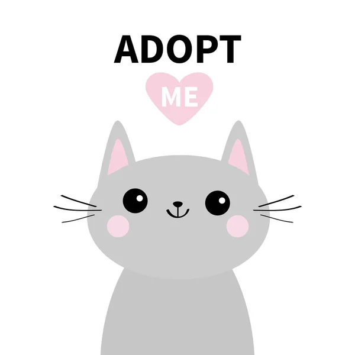

| Name | Category | Age | Color | Behavior |
|---|---|---|---|---|
| Mini | stray | 1 yr | white, black | Human friendly, likes to sleep, playful |
| Name | Category | Age | Color | Behavior |
|---|---|---|---|---|
| Tiger | stray | 5 months | brown, black strip | Human friendly, likes meat, playful |
| Name | Category | Age | Color | Behavior |
|---|---|---|---|---|
| Pillow | stray | 3 months | gray | Human friendly, likes fish, playful |